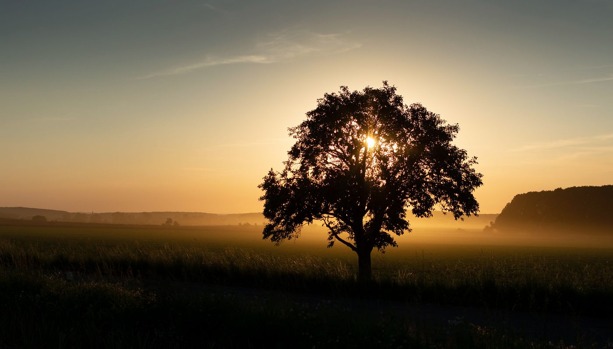
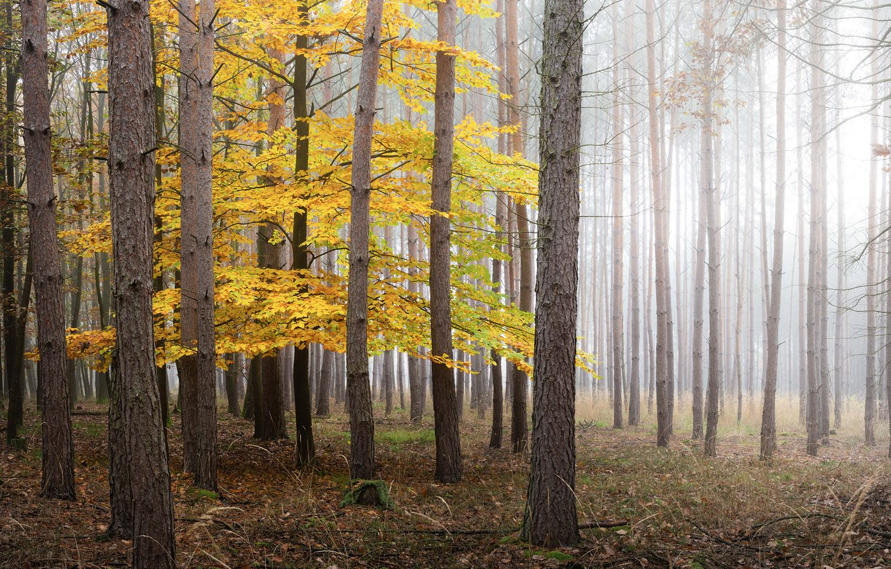

Patrik Novák
Landscape, forest and light

Silence17 photographs

Edge of Day17 photographs

Forest22 photographs

Winter17 photographs

Stone and Light18 photographs

Animals13 photographs
Landscape, forest and light

